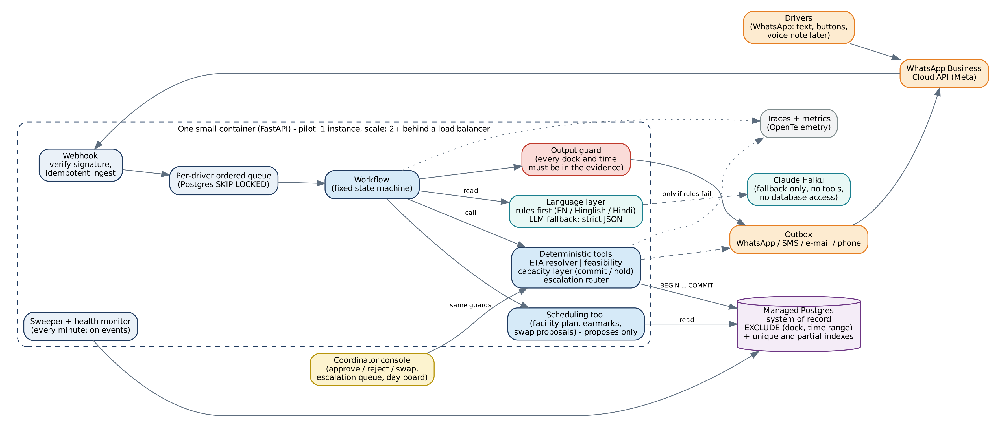
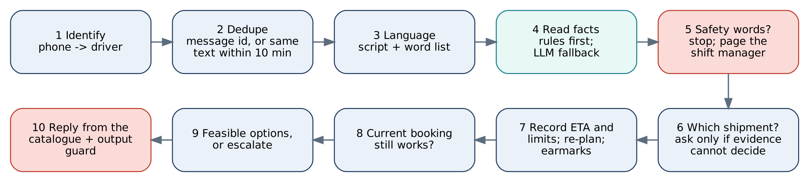

FDE ACADEMY | MINI PROJECT 2 | SETUHAUL LOGISTICS
Deliverable 3
Working Prototype
A runnable Driver-Exception Agent on the supplied database: conversation workflow, deterministic tools, a capacity layer with database guards, and a facility scheduling tool
About 2,400 lines of Python using only the standard library and SQLite (charts use matplotlib). It runs end to end on a copy of the supplied snapshot in under a second for the scenario day. This document explains the architecture, every tool, the data added to the schema, the booking transaction line by line, the language layer and its LLM fallback, how to run it, and the path to production.
Client: SetuHaul Logistics Pvt. Ltd. (FDE Academy challenge)
Snapshot: 4 August 2026, Jaipur DC and Gurugram Cross-Dock (Asia/Kolkata)
Version: 1.0 | 18 November 2026
Audience: FDE Academy reviewers; SetuHaul engineering lead
Contents
1. What we built, in one page
2. Architecture
One turn, step by step
3. The tools
4. What we added to the database
5. The booking transaction, line by line
6. Feasibility and the facility plan
7. The language layer and the LLM fallback
8. How to run, and what it produces
9. From prototype to production
Same guards in Postgres
Scale path
10. Security and privacy
The prototype is the real decision logic, not a mock. Every number in deliverables 4 and 5 comes from running it.
| Part | What it does | File |
|---|---|---|
| Conversation workflow | A fixed state machine that turns one WhatsApp message into one reply, calling tools in a known order | setuhaul/workflow.py |
| Language layer | Detects English, Hinglish or Hindi; turns words into a fact sheet with evidence | setuhaul/nlu.py |
| ETA resolver | Chooses the ETA to plan on, its confidence and the late edge | setuhaul/eta.py |
| Feasibility engine | Builds each dock's busy timeline and lists the slots a truck can really use | setuhaul/timeline.py |
| Capacity layer | Commits, holds, approvals, cancellations and swaps, each in one transaction | setuhaul/capacity.py |
| Database guards | Hold indexes, overlap trigger, compatibility trigger, history table | setuhaul/db.py |
| Scheduling tool | Plans all trucks at a facility; earmarks; health checks; what-ifs; swap proposals | setuhaul/planner.py |
| Escalation router | Picks the right person and channel, skips vacant roles and broken channels | setuhaul/escalation.py |
| Reply catalogue and output guard | Reviewed replies in three languages; blocks any dock or time not in the evidence | setuhaul/replies.py |
| Clock and policy | Explicit as-of time; every business number in one file | setuhaul/clock.py, config.py |
| World replay | Rewinds the snapshot to 08:20 and replays the day's events at their own times | setuhaul/world.py |
Run it (Python 3.11 or later; nothing to install for the core):
python3 -I run_scenarios.py out/ # deliverable 4: the scripted day, 13 cases (~1 s)
python3 -I run_integrity.py out/ # deliverable 5: 12 tests + 50-race proof (~15 s)
python3 -I run_scheduler.py out/ # facility plan, 7 policies incl. the exact engine, Gantt charts (~80 s; also tries all 40,320 orders as a benchmark)
python3 -I scripts/audit.py data/setuhaul_freight_operations.db out/ # deliverable 1
Each run starts from a fresh copy of the supplied database, so results are identical every time. We checked this by running twice and comparing the metrics files.
IN PLAIN WORDS | What the prototype is like Think of a railway reservation counter. The clerk (workflow) listens to the passenger, looks things up in fixed registers (tools), and only stamps a ticket after checking the master chart in one go, so no one else can stamp the same berth in that moment (the transaction). The clerk never invents a berth number: every number on the ticket must come from the chart (the output guard). |

Production shape of the prototype. Everything inside the dashed box is one small container. The prototype runs the same modules against SQLite.
Why this shape. Peak load is about one message a minute across two facilities. The hard problem is not scale; it is correctness under concurrency, and that lives in the database. So we keep one process, one database and one write path, and put the effort into guards and tests. Deliverable 2 (D15) records the cost comparison.
What runs where
| Layer | Pilot | Prototype stand-in |
|---|---|---|
| Inbound | WhatsApp Business Cloud API webhook, signature verified | workflow.handle(phone, text, as_of, external_id) |
| Ordering | Per-driver queue: one turn at a time per driver (FOR UPDATE SKIP LOCKED) | Per-conversation busy flag; a second turn raises ConcurrentTurn |
| Decisions | Workflow and tools (Python) | Same code |
| Words | Rules; Claude Haiku as fallback with strict JSON | Rules; fallback asks a clarifying question (no network) |
| System of record | Managed Postgres with EXCLUDE constraint | SQLite with BEGIN IMMEDIATE and triggers |
| Outbound | Outbox table drained by a sender (WhatsApp, SMS, e-mail, phone task) | outbox table; scenario prints it |
| Time | Real clock, injected | Explicit as_of on every call |
| Humans | Coordinator console (approve, reject, swap, queue) | capacity.decide(), capacity.swap() |

Every inbound message follows the same ten steps. Red steps can stop the flow.
Identify. The sender's phone number gives the driver. Unknown numbers get no reply and are logged for operations.
Dedupe. Same message ID, or the same driver and same normalised text of 4 or more words within 10 minutes, means no second reply and no second ETA record.
Language. Script share and word list. Short replies keep the conversation's language.
Read facts. Regular expressions produce a Facts record (intent, ETA, window, confidence, limits, choice, hints) and keep the matched text as evidence.
Safety words stop all scheduling talk and page the shift manager by phone.
Which shipment. The evidence ladder in deliverable 2 (D2); ask only if it cannot decide.
Record. Write the ETA, the window and the driver's limits; re-plan the facility; refresh earmarks.
Current booking still works? If yes, tell the driver to keep it. If not, look for options.
Options or escalate. Up to three feasible options, or a hand-off if there are none.
Reply. Pick from the catalogue, fill in values, pass the output guard, write to the outbox.
Every turn returns the list of tools it called. That list is printed in the scenario transcript, so the transcript is also the audit trail:
{"t": "08:23", "who": "DRV003", "text": "1", "state": "BOOKED",
"tools": ["read_message:CHOOSE", "book:CONFIRMED APT-N0001"],
"reply": "Booked: Dock D4 at Jaipur DC, start 8:35 AM. You're already checked in;
the yard team will call you to Dock D4. Booking ref APT-N0001."}
The workflow can call only these. Each is a plain Python function with typed inputs, no free text in, and a structured result out.
| Tool | Function | Reads | Writes | Guarantees |
|---|---|---|---|---|
| Resolve ETA | eta.resolve(con, shipment, as_of) | eta_updates, facility_checkins, shipments, other trips of the vehicle | nothing | Planned gate arrival, release time, confidence, plausibility flags |
| Record ETA | inside workflow (one transaction) | conversation | eta_updates, eta_windows, driver_constraints | Rows dated as-of; source = DRIVER |
| Feasible options | timeline.options(con, sid, as_of, limit, constraints, earliest_start) | slots, docks, rules, dock events, check-ins, bookings, holds, earmarks | nothing | Only slots passing all 15 checks; earliest start per slot; reason per rejection |
| Commit | capacity.commit(con, sid, slot, as_of, idem_key) | everything above | appointments, dock_reservations, appointment_events, outbox, audit_log | Re-check and insert in one BEGIN IMMEDIATE; idempotent |
| Hold for approval | capacity.hold_for_approval(...) | same | slot_holds, escalations | One live hold per slot and per shipment (indexes) |
| Approve or reject | capacity.decide(con, hold_id, approve, coordinator, as_of) | hold | appointments or hold status | Approval is re-checked; it can still fail safely |
| Expire holds | capacity.sweep(con, as_of) | holds | hold status, outbox | Expired holds release the slot and tell the driver |
| Cancel shipment | capacity.cancel_shipment(...) | appointments | appointments, events | Capacity freed at once |
| Plan facility | planner.plan_facility(con, fid, as_of, policy) | all trucks needing a door | nothing | Proposes only; never books |
| Re-plan + earmark | planner.replan(con, fid, as_of) | plan | slot_earmarks | Soft protection, 20 minutes |
| Health check | planner.health(con, fid, as_of) | every live booking | nothing | OK, AT_RISK, CERTAIN_MISS or INVALID per booking |
| What-if | planner.what_if(con, sid, as_of) | timelines | nothing | Which constraint, if relaxed, would create a slot |
| Swap proposal | planner.swap_proposal(con, sid, as_of) | bookings | nothing (trial is rolled back) | Exact new times; refuses swaps that break a driver limit |
| Swap | capacity.swap(con, high, low, as_of, actor) | both bookings | both bookings, events, outbox | Both move in one transaction or neither moves |
| Escalate | escalation.escalate(con, reason, urgency, sid, did, as_of, handoff) | facility_contacts, escalation_rules | escalations, outbox | Vacant roles and failed channels skipped; SLA set |
| Reply | replies.t(key, lang, **values) then replies.guard(text, evidence) | catalogue | outbox | Dock codes and times must appear in the evidence |
FDE NOTE | Why tools and not an agent loop The brief asks whether this is a workflow or an agent. The steps are known in advance and the cost of a wrong step is a double booking, so we use a workflow: the code decides the next step, and the model is used only to read words. This follows Anthropic's own guidance in Building effective agents: use the simplest pattern that works, and add autonomy only where the path cannot be known in advance. |
The supplied schema has no holds, no time intervals, no history and only two uniqueness guards (audit F08, F09). We add the following without changing any supplied table, so the client's own reports keep working.
| Table or object | Purpose | Guard it gives |
|---|---|---|
| slot_holds + 2 partial unique indexes | A slot waiting for a coordinator | At most one live hold per slot and per shipment |
| dock_reservations + trg_no_overlap | Every booking, hold, truck-in-dock and dock event as a time interval | No overlapping time on one door |
| trg_appt_guard | Checks every new active booking | No booking for a cancelled shipment, wrong site, overweight load, wrong door type or closed slot |
| trg_active_must_be_current | Fixes the gap in the supplied index | An active booking must be the current one |
| appointment_events | Append-only history | A past double booking can be seen (F08) |
| conversations, inbound_messages | Thread state and dedupe | One reply per message |
| idempotency_keys | Result of each commit by key | A retried commit returns the first result |
| eta_windows, driver_constraints | A range ETA and the driver's limits (earliest start, latest gate-out) | Limits are re-applied at every commit |
| slot_earmarks | Planner's protected capacity | Lower-priority drivers cannot take it |
| escalations, outbox, audit_log | Hand-offs, outbound messages, every decision | Nothing is sent outside a transaction |
The overlap trigger, verbatim from db.py:
CREATE TRIGGER IF NOT EXISTS trg_no_overlap
BEFORE INSERT ON dock_reservations
WHEN NEW.live = 1 AND NEW.kind IN ('BOOKING','HOLD')
BEGIN
SELECT RAISE(ABORT, 'DOCK_INTERVAL_OVERLAP')
WHERE EXISTS (SELECT 1 FROM dock_reservations r
WHERE r.live = 1 AND r.dock_id = NEW.dock_id
AND julianday(r.start_ts) < julianday(NEW.end_ts)
AND julianday(NEW.start_ts) < julianday(r.end_ts));
END;
IN PLAIN WORDS | How the overlap test works Two time blocks clash if each one starts before the other ends. 10:00-11:00 and 10:50-11:30 clash (10:00 < 11:30 and 10:50 < 11:00). 10:00-11:00 and 11:00-11:30 do not (11:00 is not before 11:00). That one line of logic is the whole rule. |
This is the most important code in the system. It is capacity.commit() and _commit_core(), shortened only by removing logging.
def commit(con, shipment_id, slot_id, as_of, source, actor, idem_key, approved=False):
with write_txn(con): # (1) BEGIN IMMEDIATE
prior = _idem_get(con, idem_key) # (2) seen this request before?
if prior:
return prior
res = _commit_core(...) # (3) re-check and write
_idem_put(con, idem_key, res, as_of) # (4) remember the result
return res # (5) COMMIT on leaving the block
def _commit_core(con, shipment_id, slot_id, as_of, source, actor, approved):
lim, earliest = driver_limits(con, shipment_id, as_of) # (6)
opts, _ = T.options(con, shipment_id, as_of, limit=None,
respect_earmarks=not approved, constraints=lim,
earliest_start=earliest) # (7)
match = [o for o in opts if o["slot_id"] == slot_id]
if not match:
return {"ok": False, "code": "OPTION_GONE",
"why": _why_gone(con, shipment_id, slot_id, as_of)} # (8)
o = match[0]
if o["needs_approval"] and not approved:
return {"ok": False, "code": "NEEDS_APPROVAL", "option": o} # (9)
for dead in o["releases"]:
_cancel(con, dead, "Released by planner: truck cannot reach this window")
outbox(con, ..., "DISPATCH_NOTICE", ...) # (10)
old = current_appointment(con, shipment_id)
if old:
_cancel(con, old["appointment_id"], "Rescheduled") # (11)
refresh_guard_rows(con, facility, as_of, exclude=(shipment_id,)) # (12)
try:
INSERT INTO appointments ... 'CONFIRMED', is_current = 1 ... # (13)
INSERT INTO dock_reservations ... (dock, start, occupancy_end) # (14)
except sqlite3.IntegrityError as ex:
raise GuardTripped(str(ex)) # (15)
_event(...); outbox(coordinator, "BOOKING_NOTICE"); _audit(...) # (16)
DELETE FROM slot_earmarks WHERE shipment_id = ? OR slot_id = ? # (17)
return {"ok": True, "code": "CONFIRMED", "appointment_id": ...}
| Line | What it does | Why it matters | In plain words |
|---|---|---|---|
| 1 | BEGIN IMMEDIATE takes SQLite's single write lock before reading anything | A second commit waits here, so two "check then insert" sequences can never interleave. This is what makes the re-check trustworthy. | The counter has one rubber stamp, and you must hold it before you look at the chart |
| 2 | Looks up the idempotency key (the driver's WhatsApp message ID) | WhatsApp redelivers webhooks; networks retry. The same tap must not book twice. | If the passenger shows the same token twice, give back the same ticket |
| 3 | Runs the real check and write | Everything below happens inside the lock | |
| 4 | Stores the result under the key, inside the same transaction | If the transaction rolls back, the key is not stored either, so a retry runs again cleanly | |
| 5 | Leaving the with block commits; any exception rolls back everything | All or nothing: no half-made booking | |
| 6 | Reads the driver's stored limits (for example, leave by 19:30) | Limits given in an earlier message still apply; a swap or approval cannot break them | The note the passenger gave earlier is pinned to the file |
| 7 | Re-runs the full feasibility check, now, with the lock held | The option may be 10 minutes old. A breakdown, another booking or an earmark may have appeared since. | Check the chart again just before stamping |
| 8 | Refuses with a reason code: taken, held, protected or no longer fits | The driver gets a plain explanation and fresh options in the same reply | "Sorry, that berth just went; here are three others" |
| 9 | Stops if a rule needs a person (start after 21:00, data conflict) | The workflow then creates a hold with a deadline instead | Some tickets need the station master's signature |
| 10 | Releases bookings whose trucks certainly cannot arrive in time (dead bookings), and tells their dispatcher | A dead booking must not block a truck that can use the slot; the dispatcher must hear why | An empty reserved seat on a departed train is released, and the agent is told |
| 11 | Retires the shipment's old booking | The supplied index allows only one current active booking per shipment; this keeps it true | Cancel the old ticket before issuing the new one |
| 12 | Refreshes the "busy" intervals: trucks in docks, kept bookings, dock events | The overlap trigger checks against up-to-date reality, including overruns | Update the chart with who is still sitting in the seats |
| 13 | Inserts the booking. trg_appt_guard and trg_active_must_be_current run here | If the code has a bug, the database still refuses a wrong door, overweight load or closed slot | A second clerk checks the stamp |
| 14 | Inserts the time interval. trg_no_overlap runs here | If two bookings would overlap on one door, the database refuses | A third check: no two people on one seat at one time |
| 15 | Turns a database refusal into a typed error, never shown raw to a driver | The workflow answers "that option is no longer available" and alerts operations | |
| 16 | Writes history, notifies the coordinator, logs the decision | Every change is visible later | |
| 17 | Removes earmarks that this booking has consumed | Protection never outlives its purpose |
Feasibility (timeline.py) builds, for each door, a sorted list of busy intervals: live bookings (unload + 10-min changeover), holds, trucks in a dock (until expected end, plus a 10-minute buffer once they overrun), and dock events. For a shipment it tries each OPEN slot on a compatible door and finds the earliest start inside the slot window that fits the unload without touching any busy interval and respects the driver's limits. Each rejected slot keeps a reason code, which is how the no-slot hand-off lists exactly why each door failed.
The facility plan (planner.py) treats trucks as jobs and doors as machines. It runs list scheduling: trucks are taken in an order and each gets its earliest feasible door. The first answer is a priority list with pairwise repair (swap two jobs in the order; keep the swap if the objective improves) until nothing improves. The engine of record, planner.exact, then runs a branch and bound over truck orders, warm-started by that answer: a branch is cut when the trucks already placed, plus each remaining truck's best possible placement on the door time still free, cannot beat the best plan found. It stops at a node count (config.EXACT_NODE_LIMIT, 200,000), not a clock, so runs are reproducible, and reports PROVEN_OPTIMAL when the tree is exhausted. On the 09:45 snapshot it proves the plan optimal after 5,425 of 40,320 orders. planner.explain gives each truck a one-line reason. With 8 or fewer jobs every order is also tried as a benchmark. The objective is compared in strict order: trucks left with no door, then priority-weighted wait (minutes x 8/4/2/1), then the number of changes to what drivers were told.
FDE NOTE | Upgrade path for the scheduler The exact search is comfortable for one facility with a few dozen trucks a day; if the node budget runs out it returns the best plan found and says so, and priority + repair is always available as the first answer. When SetuHaul adds facilities or new constraint types (shared yard space, labour crews per shift), the documented step is Google OR-Tools CP-SAT with interval variables and AddNoOverlap per door. The tool interface stays the same: it proposes, the capacity layer commits. |
Rules first. nlu.extract() handles the brief's messages and our Hinglish and Hindi variants with no model call: clock times (11:30, 7 baje, 7 ke baad, 7 बजे), durations (one hour, dedh ghanta, डेढ़ घंटा), ranges, order references, hints (evening, heavy, reefer), choices (1, 2, 3, "pehla"), declines, safety words and urgency claims. Each value keeps the exact text it came from.
Model only when the rules return UNKNOWN or a time they cannot place. The production design calls Claude Haiku with no tools and no database access, and requires this JSON shape. Code validates it; anything outside the shape is treated as UNKNOWN and the driver is asked.
{
"type": "object",
"additionalProperties": false,
"required": ["intent", "eta", "limits", "shipment_hint", "choice", "safety", "evidence"],
"properties": {
"intent": {"enum": ["REPORT_DELAY", "EARLY_ARRIVAL", "ASK_OPTIONS", "CHECK_STATUS",
"CHOOSE", "DECLINE", "ASK_HUMAN", "SAFETY", "UNKNOWN"]},
"eta": {"type": ["object", "null"], "additionalProperties": false,
"properties": {
"kind": {"enum": ["CLOCK", "DELAY", "WINDOW", "VAGUE"]},
"clock": {"type": ["string", "null"], "pattern": "^([01][0-9]|2[0-3]):[0-5][0-9]$"},
"delay_min": {"type": ["integer", "null"], "minimum": 0, "maximum": 720},
"window": {"type": ["array", "null"], "items": {"type": "string"}, "maxItems": 2},
"hedged": {"type": "boolean"}}},
"limits": {"type": "object", "additionalProperties": false,
"properties": {"earliest_start": {"type": ["string", "null"]},
"latest_gate_out": {"type": ["string", "null"]}}},
"shipment_hint": {"enum": ["MORNING", "EVENING", "HEAVY", "REEFER", null]},
"choice": {"type": ["integer", "null"], "minimum": 1, "maximum": 3},
"safety": {"type": "boolean"},
"evidence": {"type": "object", "additionalProperties": {"type": "string"}}
}
}
Checks in code after the model replies: every time must lie between as-of minus 1 hour and as-of plus 24 hours; every evidence string must appear in the driver's message; intent SAFETY is also checked against the safety word list, and either source triggers escalation. The model's output can change what we ask, never what we book.
IN PLAIN WORDS | The model's job The model is a translator, not a manager. It may say "the driver means 7 in the evening", and code then checks that 7 PM is a sensible time and that the words "shaam 7" are really in the message. The model never picks a dock. |
Replies come from a catalogue of 34 reviewed templates, each written in English, Hinglish (Latin script) and Hindi (Devanagari). The output guard extracts every dock code and clock time from the outgoing text and refuses to send unless each appears in the evidence for this turn. The word "booked" may appear only after a commit returned CONFIRMED. During development the guard blocked one reply: the no-slot message named doors D3 and D5, but the turn's evidence did not yet include the per-door rejection reasons. We added the reasons to the evidence. The guard was right to stop the message.
Requirements. Python 3.11 or later and its built-in sqlite3. Tested on Python 3.13.18 with SQLite 3.53.1. matplotlib (tested 3.11.2) is used only by run_scheduler.py for the Gantt charts. No other packages, no network.
Folder layout of the zip
setuhaul_prototype/
README.md
data/setuhaul_freight_operations.db supplied snapshot (read-only; runs use a copy)
setuhaul/ the package (13 modules)
tests/test_integrity.py 12 tests
run_scenarios.py run_integrity.py run_scheduler.py
scripts/audit.py the 36 data checks
out/ results used in deliverables 1, 4 and 5
| Command | Output files | Used in |
|---|---|---|
| python3 -I scripts/audit.py data/setuhaul_freight_operations.db out/ | audit_results.json, audit_queries.sql | Deliverable 1 |
| python3 -I run_scenarios.py out/ | scenario_run.json (every turn, tool list, reply), scenario_metrics.json, scenario_world.db | Deliverable 4 |
| python3 -I run_integrity.py out/ | integrity_results.json, console summary | Deliverable 5 |
| python3 -I run_scheduler.py out/ | scheduler_results.json, gantt_fcfs.png, gantt_ours.png | Deliverables 2 and 4 |
-I (isolated mode) stops Python from importing stray files in the working folder; the runners add their own folder to the path.
Prototype limits, stated plainly
No live WhatsApp or LLM call (no network in the build environment). The adapters are the documented next step.
SQLite has one writer at a time. That is enough for the pilot volume and makes the proof simple; production uses Postgres (next section).
Coordinator actions are function calls, not a screen.
Travel times between sites are not in the data, so the "divert" recommendation says so instead of guessing.
CREATE EXTENSION IF NOT EXISTS btree_gist;
CREATE TABLE dock_reservations (
reservation_id text PRIMARY KEY,
dock_id text NOT NULL REFERENCES docks(dock_id),
during tstzrange NOT NULL,
kind text NOT NULL CHECK (kind IN ('BOOKING','HOLD','KEPT_BOOKING','IN_DOCK','DOCK_EVENT')),
ref_id text,
live boolean NOT NULL DEFAULT true,
created_at timestamptz NOT NULL DEFAULT now(),
CONSTRAINT no_overlap_bookings
EXCLUDE USING gist (dock_id WITH =, during WITH &&)
WHERE (live AND kind IN ('BOOKING','HOLD'))
);
CREATE UNIQUE INDEX ux_live_hold_per_slot ON slot_holds(slot_id)
WHERE hold_status IN ('ACTIVE','PENDING_APPROVAL');
CREATE UNIQUE INDEX ux_live_hold_per_shipment ON slot_holds(shipment_id)
WHERE hold_status IN ('ACTIVE','PENDING_APPROVAL');
-- in the commit transaction, before the re-check:
SELECT pg_advisory_xact_lock(hashtext(:facility_id));
| Concern | SQLite prototype | Postgres production |
|---|---|---|
| Serialising commits | BEGIN IMMEDIATE: one writer for the whole database | pg_advisory_xact_lock per facility: commits at Jaipur and Gurugram run in parallel, two commits at one facility queue |
| Bookings and holds never overlap | trg_no_overlap | EXCLUDE USING gist: the database's own constraint, safe even without the lock |
| Booking vs dock event or truck in dock | Same trigger | A BEFORE INSERT trigger with the same overlap test (the exclusion constraint compares only rows in its WHERE clause) |
| Compatibility, current flag | Triggers | Same triggers in PL/pgSQL |
| Per-driver ordering | In-process flag | Queue table with SELECT ... FOR UPDATE SKIP LOCKED |
| Time | ISO text, julianday() | timestamptz, tstzrange |
The integrity suite (deliverable 5) is written against the capacity functions, not SQLite internals, so it runs unchanged against Postgres. That is the acceptance test for the migration.
| Stage | Volume | Shape | Monthly cost (list price) |
|---|---|---|---|
| Pilot | 2 facilities, about 40 trucks a day | 1 small container + managed Postgres (smallest tier) | About US$22-30 + WhatsApp |
| Region | 10-20 facilities | 2 containers behind a load balancer; Postgres with a read replica for the console | About US$80-150 |
| National | 100+ facilities | Doc A's AWS design: queue, serverless workers, Aurora, RDS Proxy | Doc A's floor of about US$170 a month before traffic, then usage |
WhatsApp is billed per message. From 1 October 2026 each business number gets 1,000 free service messages a month, then about ₹0.145 each; proactive check-ins are utility templates, billed per message. At pilot volume the messaging cost is a few hundred rupees a month.
Identity from the channel, not the text. The driver is the verified phone number on the webhook. A message saying "I am DRV004" changes nothing.
Webhook signatures verified; unknown numbers get no data.
Least privilege. The model gets the driver's message text only: no phone number, no name, no database. Prompts and outputs are logged without phone numbers.
Drivers see only their own shipments. Replies never mention another driver, carrier or customer; a refusal says "another truck", never which.
Personal data kept short. We propose keeping message bodies 90 days for disputes, then only the extracted facts. Phone numbers are masked in logs and in every exported file.
India's DPDP Act 2023. Drivers are told at first contact what is collected and why (scheduling their unload), and how to reach a person. The client's legal team should confirm the notice text and retention period (review pack, Q33).
Prompt injection. Driver text is data. It cannot reach a tool except through the fact sheet, whose fields are typed and range-checked.